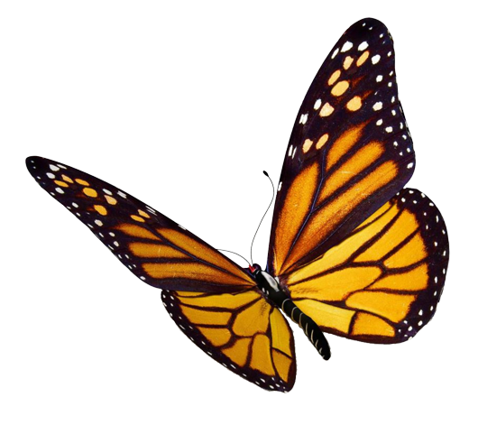

A presença das plantas dentro de nossas casas nos trazem grandes benefícios: elas têm o poder de deixar no ambiente, um ar mais limpo e cheio de vida, e proporcionando um toque mais acolhedor aos cômodos. As plantas além de questão estética, são capazes de eliminar toxinas presentes no ar, proporcionando, assim, maior qualidade de vida. Se você ainda não sabe como cultivar plantas dentro de sua casa, e quais espécies conseguem se desenvolver dentro de vasos, não se preocupe! Pois, há diversas espécies que conseguem se reproduzir e desenvolver quando colocadas em vasos.

